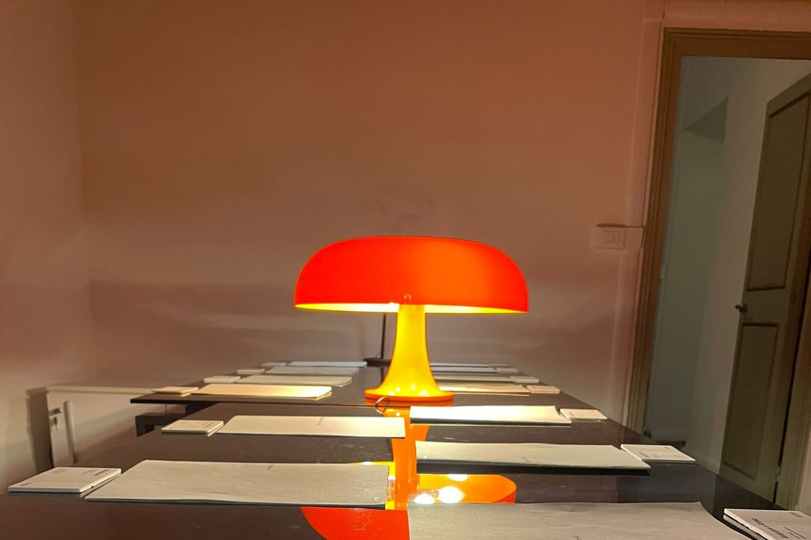
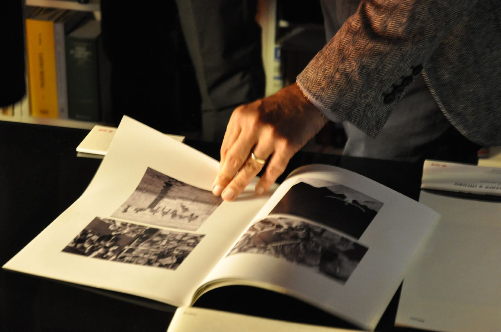
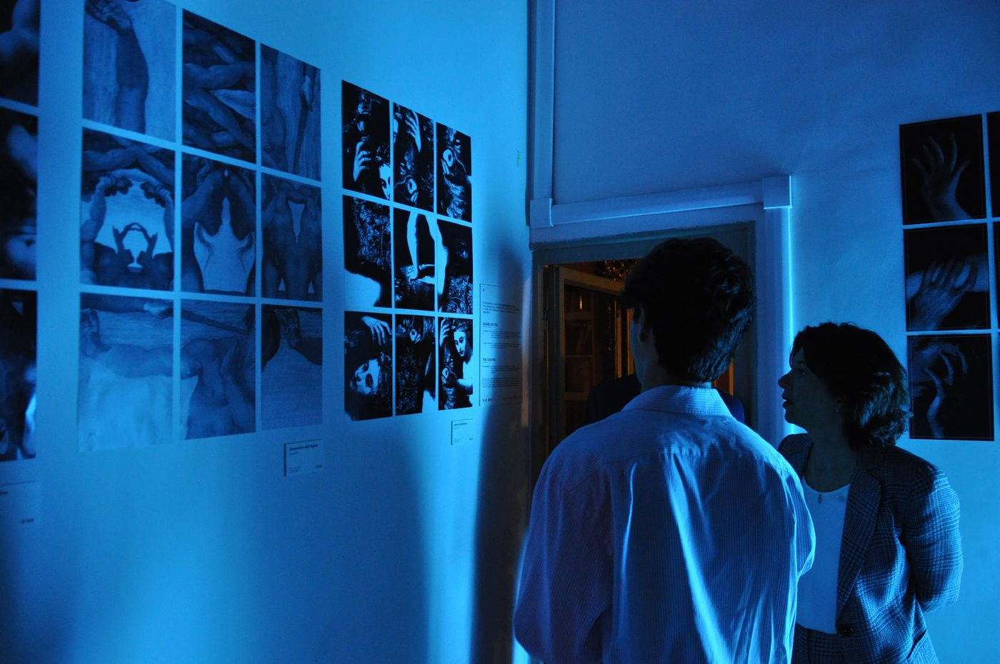
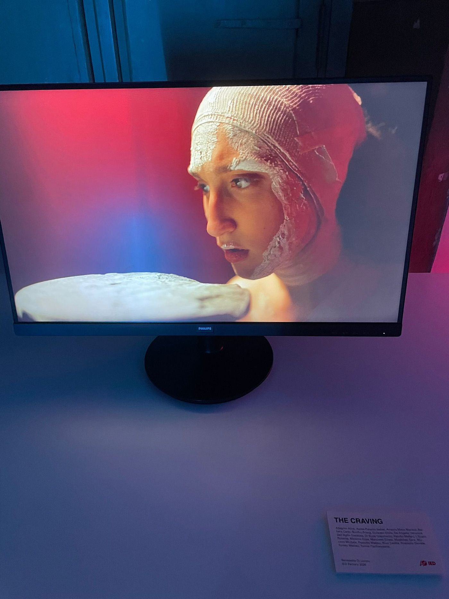
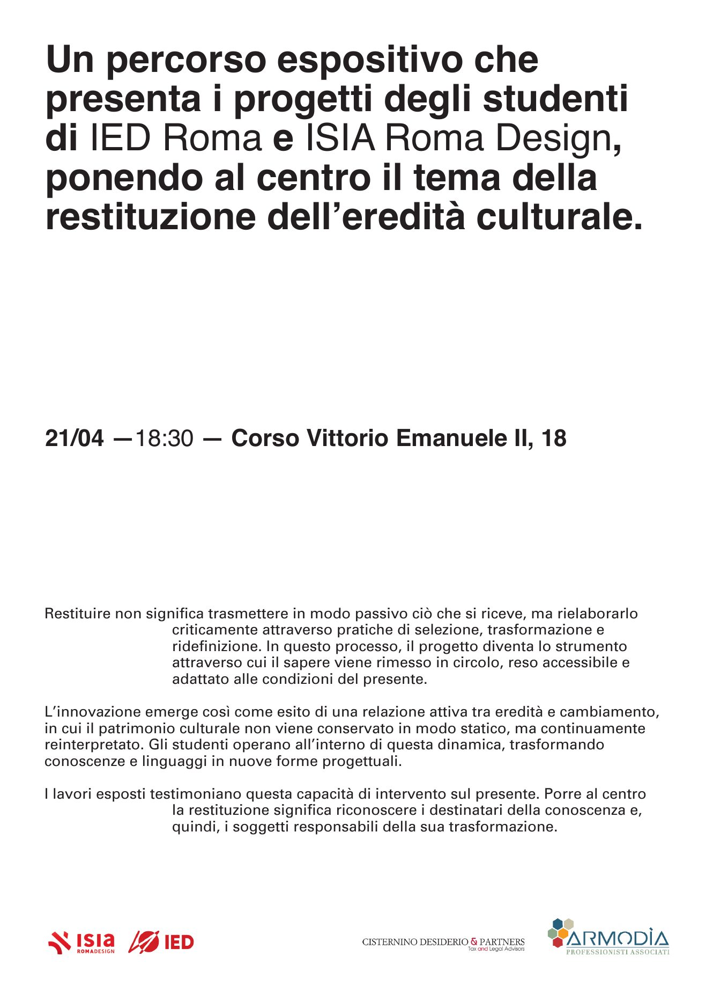
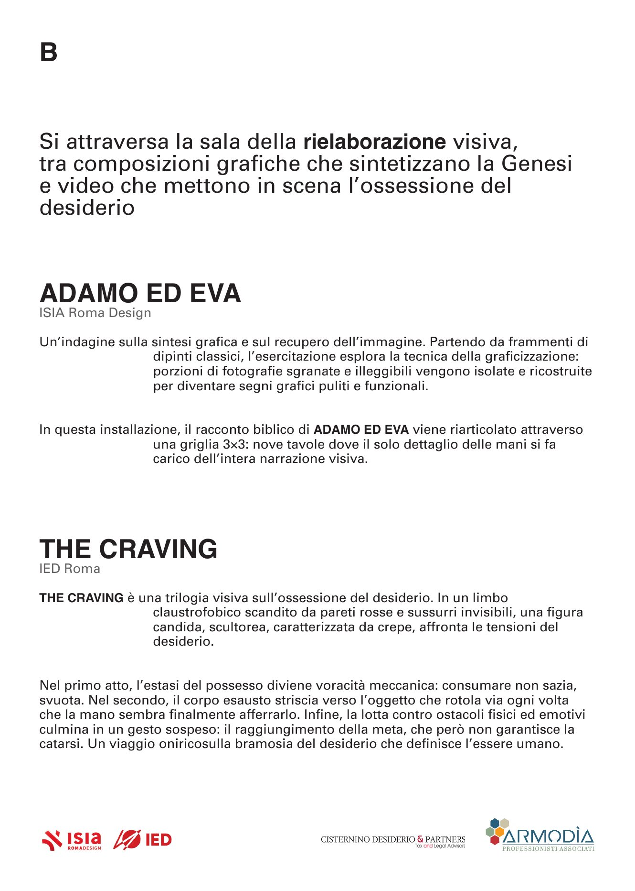
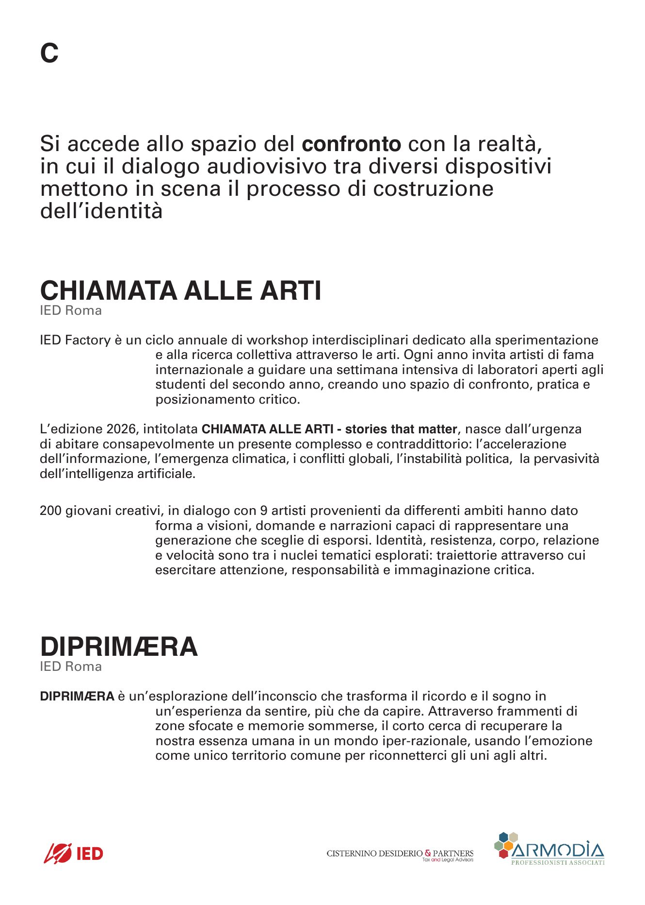

Parcours d’exposition
21 avril 2026, 18 h 30
Corso Vittorio Emanuele II 18, Roma
Anniversaire de Rome et Journée de l’innovation et de la créativité
Un parcours d’exposition qui présente les projets des étudiants de l’IED Roma et de l’ISIA Roma Design, autour du thème de la restitution de l’héritage culturel.
Restituer
Restituer ne signifie pas transmettre passivement ce que l’on reçoit, mais le retravailler de façon critique par la sélection, la transformation et la redéfinition. Le projet devient l’outil par lequel le savoir est remis en circulation, rendu accessible et adapté aux conditions du présent.
L’innovation naît d’une relation active entre héritage et changement : le patrimoine culturel n’est pas conservé de façon statique, mais sans cesse réinterprété. Les travaux exposés témoignent de cette capacité à agir sur le présent.
L’exposition a transformé un cabinet professionnel, un espace de travail conçu pour un tout autre usage, en un parcours de trois salles. Avec Ludovico Genone et Prisca Bonfini j’ai assuré la direction artistique ; le design graphique, des panneaux aux imprimés, est de moi.
Le plan
L’espace se divise en trois salles, un parcours non linéaire d’archive, de réélaboration et de confrontation.
● Entrée. Cliquez sur une salle pour y aller.
Archive
On entre dans l’espace de l’archive, où la mémoire collective devient livre d’artiste. Des visions indépendantes retravaillent un même corpus de photographies communes, rendant au quotidien de nouvelles formes et de multiples possibilités narratives.



Fritto Misto
ISIA Roma DesignUn projet d’exposition qui réunit 41 fanzines d’étudiants de l’ISIA de Rome, nés d’une sélection mixte de 180 photographies de Mariano Doronzo. À partir d’une archive commune, le projet, imaginé par Francesco Delrosso, produit 41 récits autonomes, partageant la même matière visuelle mais développés par des démarches éditoriales indépendantes.
Réélaboration
On traverse la salle de la réélaboration visuelle, entre compositions graphiques qui synthétisent la Genèse et vidéos qui mettent en scène l’obsession du désir.



Adam et Ève
ISIA Roma DesignUne recherche sur la synthèse graphique et la récupération de l’image. À partir de fragments de peintures classiques, l’exercice explore la graphisation : des portions de photographies granuleuses et illisibles sont isolées et reconstruites jusqu’à devenir des signes graphiques nets. Le récit biblique est réorganisé sur une grille de 3×3 : neuf planches où le seul détail des mains porte tout le récit.
The Craving
IED RomaUne trilogie visuelle sur l’obsession du désir. Dans des limbes claustrophobes de murs rouges et de murmures invisibles, une figure blanche et sculpturale, marquée de fissures, affronte les tensions du désir : l’extase de la possession qui vide, le corps qui poursuit l’objet qui lui échappe, le but atteint qui n’apporte aucune catharsis.
Confrontation
On accède à l’espace de la confrontation avec la réalité, où le dialogue audiovisuel entre différents dispositifs met en scène la construction de l’identité.

Chiamata alle arti, stories that matter
IED RomaL’édition 2026 d’IED Factory, le cycle annuel d’ateliers interdisciplinaires animés par des artistes internationaux. 200 jeunes créatifs, avec 9 artistes de domaines différents, ont donné forme à des visions et des récits sur un présent complexe : identité, résistance, corps, relation et vitesse.
Diprimæra
IED RomaUn court métrage qui déplace le centre du récit de l’objectivité des faits vers la subjectivité de l’inconscient : fragments de zones floues et de mémoires enfouies, pour retrouver l’essence humaine dans un monde hyper-rationnel.
Le design graphique
Six panneaux : deux présentent l’exposition et le plan, un réunit les crédits, trois accompagnent les salles. Cliquez pour agrandir.






